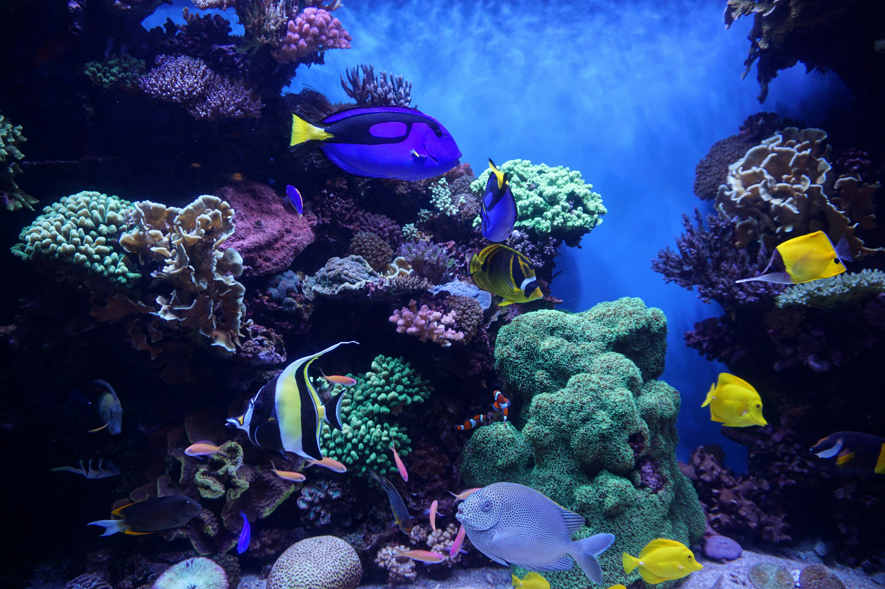

Ryby do pierwszego akwarium
Na start najlepiej wybierac gatunki spokojne i latwe w karmieniu. Należy pamiętać o tym aby nie przerybić zbiornika, ponieważ wpłynie to negatywnie na nasze ryby.

Dobór akwarium do gatunku ryb
| Gatunek | Minimum | Uwagi |
|---|---|---|
| Gupik | 54 l | Kolorowy, szybko sie mnozy. |
| Kirysek panda | 60 l | Lubi dno z drobnym piaskiem. |
| Neon Innesa | 60 l | Najlepiej w stadzie od 8 sztuk. |
| Bojownik | 25 l | Raczej pojedynczo z lagodna obsada. |
Dobre porady na start
Nie wpuszczaj ryb do swiezo zalanego akwarium.
Najpierw sprawdz filtr i temperature.
Karmienie male, ale regularne.